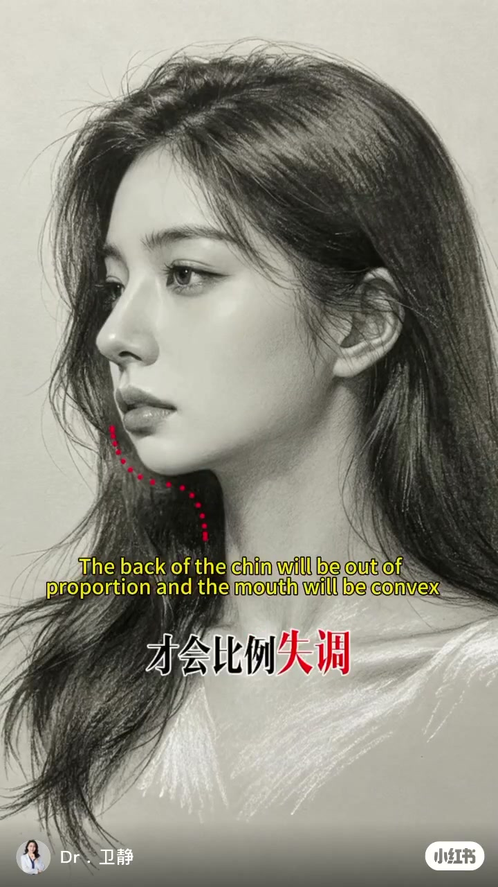
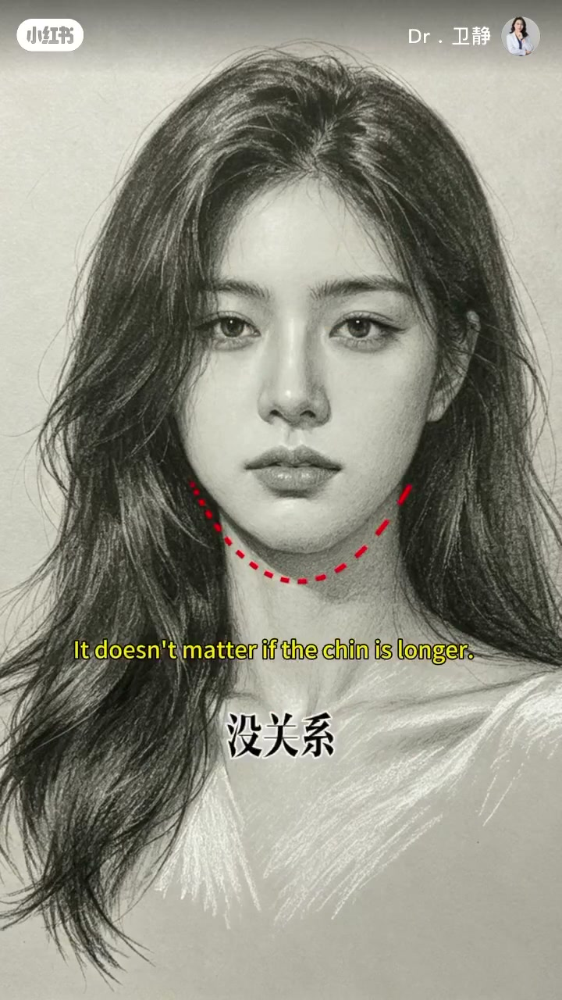

内容要点
16 秒的面部美学速览：下巴的美学密码不在长短，而在比例。短下巴不显丑，后缩才会导致比例失调显嘴凸；方下巴有气场，但宽度超过瞳距会奇怪；长一点没关系，但下颌圆崎、曲线断层会显假面；翘一点很精致，但翘度超过鼻孔反而显脸长。
知识结构
[00:00→00:04]
短下巴
下巴短一点不会不好看，后缩才会比例失调、显嘴凸。
[00:04→00:08]
方下巴
方一点有气场，但宽度超过瞳距就会很奇怪。
[00:08→00:14]
长下巴与翘下巴
长一点没关系，但下颌圆崎、曲线断层会显假面；翘一点很精致，但翘度超过鼻孔就会显脸长。
总结
下巴的美学判断基准：看比例不看绝对长短。短不丑、方要有度（不超瞳距）、长要线条连贯（避免下颌圆崎断层）、翘要克制（不超鼻孔）。
00:00-00:16四个基准：短、方、长、翘的美学边界
视频用四组对照快速给出下巴的美学密码：「下巴短一点不会不好看，下巴后缩才会比例失调、显嘴凸。」短不是问题，后缩才是。
「下巴方一点有气场，但宽度超过瞳距就会很奇怪。」方要有度，宽度是判断标准。「下巴长一点没关系，但下颌圆崎、曲线断层就会显假面。」长要线条连贯。「下巴翘一点很精致，但翘度超过鼻孔就会显脸长。」翘要克制。四条边界共同构成下巴审美的基本框架。


完整转录（9段）
以下文本由 Whisper medium 模型自动转录，可能存在少量识别误差，已尽可能修正。
下巴短一点不会不好看
下巴厚缩才会比例失调
显嘴凸
下巴方一点有气场
但宽度超过瞳距就会很奇怪
下巴长一点没关系
但下颌圆崎曲断层就会显假面
下巴都翘一点很精致
但翘度超过鼻孔就会越亮脸